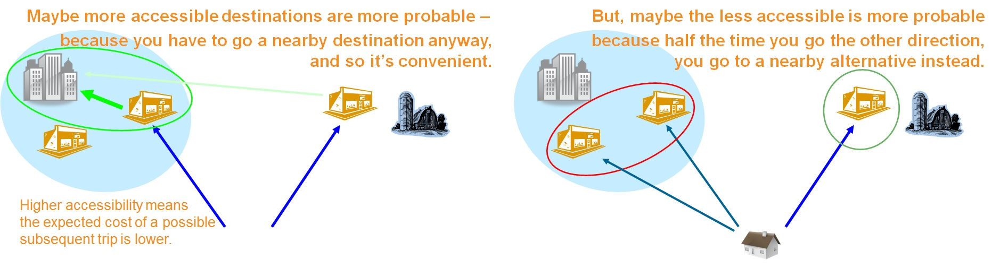

Factors Affecting Destination Choice
This page is part of the Category [.
Zone-based destination choice models will incorporate a utility function that includes a number of different types of explanatory variables. Generally speaking, the utility function will include two categories of explanatory factors:
- Qualitative Factors (how good are the choices in a given destination zone)
- Quantitative Factors (how many individual choices are in a zone)
The usage of qualitative explanatory factors is common in virtually all choice models. The quantitative factors are an unusual feature of destination choice models, and arise out of the fact that travelers are modeled as choosing a destination zone, but in actuality are choosing one of multiple individual opportunities within the zone (e.g. for a work trip the destination is one individual job among all the jobs in a zone).
The sections below detail some of the more common types of parameters and variables that are used to represent these factors in destination choice models.
# Size Terms / Attractions
Destination choice models are usually represented with some level of aggregation of the alternatives. That is, the "alternatives" represented in the model, often TAZs, are not actually the choices, but they represent a pool of choices. For example, the destination choice model may express the choice of a work trip destination as TAZ 123, but in actuality the destination is one particular job among however many jobs there are within that TAZ; if there are more jobs in the TAZ, there are more actual sub-alternatives to choose within the modeled alternative of TAZ 123. The aggregate choices in many ways are similar to a nested logit model, with the aggregations (zones) corresponding to the nests, except we only observe the choice at the nest level, not at the elemental alternative level. To incorporate this detail into the utility function for the destination choice model, we must provide a representation of the number of individual unique alternatives available within the zone.
The exact nature of the quantitative term will generally vary based on the trip purpose being modeled. For work based trips, it is typical to include measures of employment, either in total or by industry type (the latter being preferred if disaggregate employment information for travelers is also available by industry type). For non-work purposes, it is typical to include only particular relevant industry categories (e.g. retail employment for shopping purposes, restaurant employment for meal purposes, etc.) and other socio-economic features of the zones as well (e.g. households or population for social purposes).
In general, when thinking about which variables and parameters are part of the size terms in the utility function, the questions to consider is whether the data represents how many opportunities there are (if so, it's a size term) or how good (or bad) the opportunities are (in which case, not a size term).
While this page describes theoretical foundations, actual data sources commonly used in destination choice modeling as Size Terms / Attractions can be found here.
# Distance / Impedance Terms
Perhaps the most fundamental terms in the utility function for destination choice models are measures of distance, travel time, or more generally, impedance. These terms represent the effort required to get to various alternative destinations from a known origin.
Distance : The simplest representation in this category is purely distance, either straight line ("as the crow flies") or more typically routed via the shortest path on a highway network. Using pure distance is convenient in some cases, as it does not require any representation or calculation of congestion, link flow speeds, travel costs, etc. Depending on how the destination choice model is integrated into a larger family of models, some of these measures might not even be available at the time the model is applied. Still, the simplicity offered by using pure distance should be considered against the limited relationship that distance has on actual travel behavior choices: people generally experience and measure "distance" as travel time, not actual linear distance.
Travel Time : It is more reasonable to measure impedance by using travel time than using pure distance. Travel time encapsulates one of the important aspects of the travel experience, and is in large part how travelers actually experience the disutility of traveling. However, using travel time as an impedance factor does require actually computing travel times, which implies knowledge of the time of day (at least by congested/peak v. uncongested/offpeak) and the mode of travel. The travel time concept can also be expanded to "generalized time", which allows for weighting and summing various components of travel time and cost (e.g., out-of-vehicle travel time can be 3 times more onerous than in-vehicle travel time).
Mode Choice Logsums : If the destination choice model is disaggregate and is placed over a similarly disaggregate mode choice model, it is typical to include the logsum from the mode choice model as a measure of impedance in the destination choice model. Doing so obviates the need for separately identifying the impedance by travel mode, as the logsum represents a impedance calculated jointly across all modes.
It is not unusual to include more than one of these measures of impedance in a single destination choice model. For example, you might have both a mode choice logsum term (to represent the multimodal accessibility to destinations) and also a pure distance term, which aids in calibration and validation. However, it is also important to be aware that the use of multiple impedance measures can also introduce problems due to colinearity. Examples for data sources for impedance measures can be found here.
# Psychological Boundaries
The utility function may include disutility factors associated with crossing boundary lines, which may represent real geographic features (e.g. rivers, railroads, ridge lines) or socio-political boundaries (e.g. state lines, neighborhood boundaries, etc). These psychological boundaries or barriers terms in the utility functions of destination choice models have important theoretical basis in cognitive or behavioral geography and are closely and importantly related to Lynch's concepts of Edges and Districts as elements of mental maps.[1] The cognitive psychology literature has documented the effect of such boundaries in distorting the perception of spatial relationships such as distance.[2][3] (For a good review of cognitive geography, see Mark et al., 1999[4])
These terms may be understood as playing an important and implicit role in the availability/perception of alternatives in destination choice sets (see Cascetta and Papola, 2001,[5] for discussion of how the availability/perception of alternatives in the choice set can be reflected implicitly by terms in the systematic utility function). In this sense, these psychological boundary terms can be important and serve as a representation of the fuzzy boundaries[6] of travelers' mental/cognitive maps which define their destination choice sets. The use of these terms may, therefore, complement the use of the universe of destinations as the choice set and perhaps complicate other schemes of choice set formation.
# Destination Accessibilities
Accessibility measures capture spatial autocorrelation, agglomeration effects, convenience, or centrality of various alternatives. These measure not so much the intrinsic desirability of a destination itself, but rather the convenience of visiting a destination so as to be able to conduct other activities nearby as well. For example, two office towers might each be construed as substantially similar destinations, but the office tower surrounded by shops and restaurants (i.e. complementary activities) would likely be more desirable than the office tower surrounded simply by parking lots and vacant land.

''Agglomeration Versus Spatial Competition
Conversely, however, accessibility variables can also help to measure the degree to which destinations compete with each other. An example of competing destinations might be fast food restaurants. The accessibility of fast food restaurants to each other may decrease the probability of visiting each of them because only one will likely be visited. The use of accessibility variables to capture differential spatial competition among alternatives lead Fotheringham to formulate the Competing Destinations model,[7][8] which was later shown to be a special case of a destination choice model and adapted to more general use in this context.[9] Both of these effects can be incorporated in destination choice models through the careful specification of multiple accessibility variables.[10]
# Other Destination Qualities
Other physical or socio-economic attributes of the various destinations can also be included in a destination choice model, such as measures of walkability, the diversity of land uses, etc.
# Constants
Unlike for many other choice models, it is not common to incorporate alternative-specific constants for every destination zone a destination choice model. Doing so results in some convenient mathematical properties (notably, for MNL models, the other parameters of the model will have unbiased estimators even in the presence of non-uniform sampling). However, including a complete set of alternative-specific constants can result in other complications: if the number of zonal alternatives approaches or exceeds the number of sampled destination observations, the model parameters will be completely over-determined and model estimation will simply fail. Even if the model is not completely over-determined, a very large number of observations may be necessary to provide sufficient statistical confidence in the estimated results. If the estimation data set is large relative to the number of zones, these problems may be overcome and it may be reasonable to use a complete set of alternative specific constants. Although this is not common when using household surveys in the United States, the advent of passively collected big data sources has recently lead to new constant rich data driven approaches.
Instead of employing a complete set of constants for every alternative, it may sometimes be advisable to include just a partial set of constants (i.e., including dummy or indicator variables for groups of zones). For example, a destination choice model might include indicator variables for zones that are in the CBD, or are within an urban growth boundary. It is also reasonable to include single zone-specific constants for a handful of particular special zones: airports, sporting arenas, major parks, or other locally identifiable locations that attract activity in amounts that are not explainable simply based on other data (e.g. employment, population, accessibility, etc.) already in the model.
# Traveler Attributes
One distinct advantage of adopting a "disaggregate" destination choice model is the capability of incorporating a wide variety of attributes of the traveler (e.g. income, gender, auto ownership, etc) into the utility function. These attributes generally do not enter the utility function directly, as the traveler attributes do not vary based upon the choice of any particular destination; instead they are interacted with other attributes that do vary by the choice, including any of the terms discussed above.
When applied in a more aggregate gravity model application, typically there are still a limited number of traveler attributes that can be incorporated into the utility function. However, the decision about which attributes, if any, to include must generally be made in the context of the entire system of models (i.e., the other three steps in the four step model) as the identified attributes usually need to remain consistent across all model components.
# References
Content Charrette: Destination Choice Models
Lynch, Kevin (1960). The Image of the City. Cambridge MA: MIT Press. ↩︎
Stevens, A. and P. Coupe. 1978. Distortions in Judged Spatial Relationships. Cognitive Psychology, Vol. 10, pp. 422–437. ↩︎
Hirtle, S. and J. Jonides. 1985. Evidence of Hierarchies in Cognitive Maps. Memory and Cognition, Vol. 13, pp. 208–217. ↩︎
Mark, D., C. Fresksa, S. Hirtle, R. Lloyd, and B. Tversky. 1999. Cognitive models of geographical space. International Journal of Geographical Information Science, Vol. 13, No. 8, pp. 747-774. http://dx.doi.org/10.1080/136588199241003 (opens new window) ↩︎
Cascetta, E. and A. Papola. 2001. Random utility models with implicit availability/perception of choice alternatives for the simulation of travel demand. Transportation Research Part C: Emerging Technologies, Vol. 9, No. 4, pp. 249–263. https://doi.org/10.1016/S0968-090X(00)00036-X (opens new window) ↩︎
Bart Kosko (1986). "Fuzzy Cognitive Maps" (PDF). International Journal of Man-Machine Studies. 24: 65–75. ↩︎
Fotheringham, A. S. Some Theoretical Aspects of Destination Choice and Their Relevance to Production-Constrained Gravity Models. Environment and Planning, Vol. 15A, 1983, pp. 1121–1132. ↩︎
Fotheringham, A. S. Modeling Hierarchical Destination Choice. Environment and Planning, Vol. 18A, 1986, pp. 401–418. ↩︎
Bhat, C., A. Govindarajan, and V. Pulugurta. Disaggregate Attraction–End Choice Modeling: Formulation and Empirical Analysis. In Transportation Research Record 1645, TRB, National Research Council, Washington, D.C., 1998, pp. 60–68. ↩︎
Bernardin, V., F. Koppelman, and D. Boyce. “Enhanced Destination Choice Models Incorporating Agglomeration Related to Trip Chaining While Controlling for Spatial Competition.” Transportation Research Record: Journal of the Transportation Research Board, No. 2132 (2009): p. 143-151. ↩︎